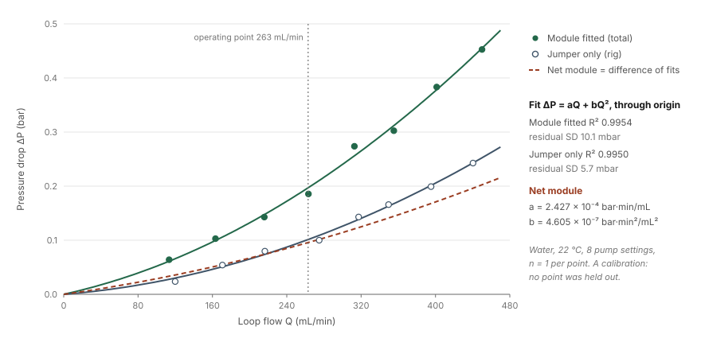
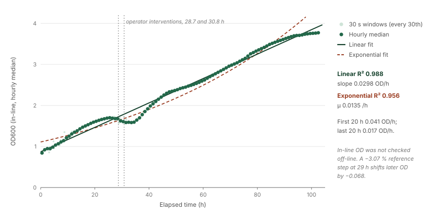
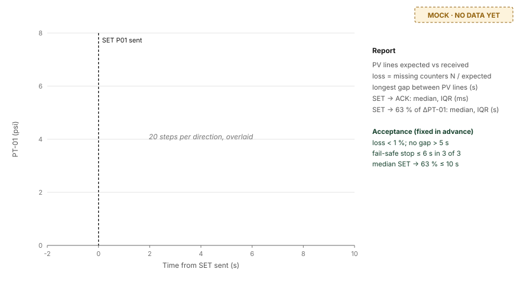
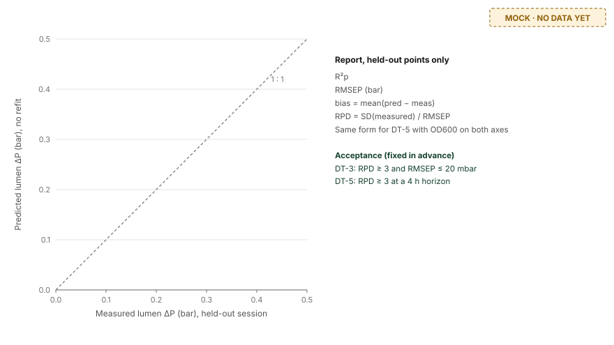
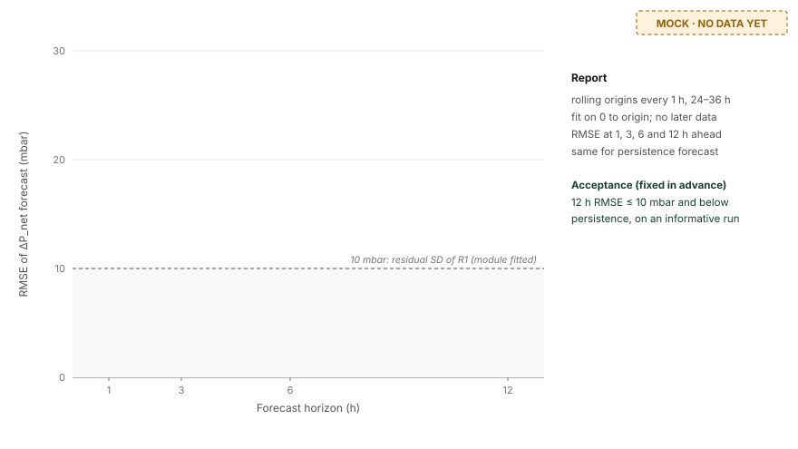
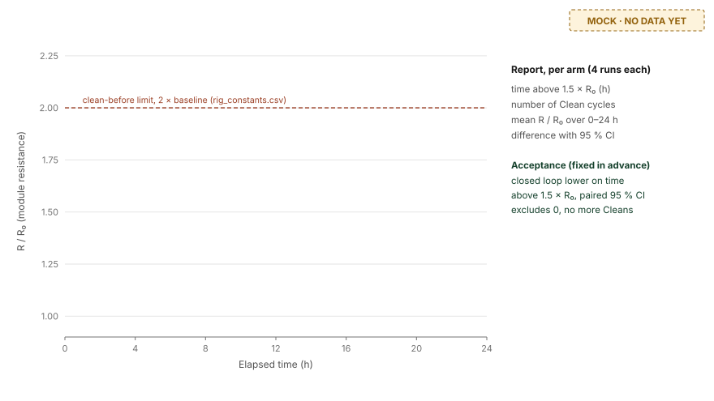

Definition and target
A digital twin needs three components: a physical asset, a virtual asset, and automated dataflow in both directions between them. Its models must also be validated.
We adopt the definition of Portela et al. [1]: a digital twin is an in-silico replica of an existing physical asset, connected to it. It comprises three parts: the physical asset, the virtual asset, and the bidirectional connectivity that carries data from the asset to the model and returns model-derived actions to the asset. Portela et al. identify the mathematical models as the heart of the twin. A twin is therefore only as useful as its predictive capability, and predictive capability exists only once a model has been validated against data it was not fitted to.
The literature distinguishes levels of maturity by the direction of automated dataflow [2, 3]. We use them as the rungs of our claim and tie each rung to the experiment that establishes it.
| Tier | Operational criterion | Established by | Wording permitted on this wiki |
|---|---|---|---|
| Digital model | A process model exists. Data move between asset and model only by hand. | Existing code and calibrations | “An operator interface with an embedded process model.” Permitted now |
| Digital shadow | Measurements flow automatically from the asset into the model, with documented loss and latency. Actions return manually. | DT-0, DT-1, DT-2 | “A digital shadow of the BR-01 hydraulic loop.” After DT-2 |
| Predictive twin | As above, with commands flowing automatically back to the asset, and at least one model validated on held-out data. | DT-3, DT-4, DT-5, DT-6 | “A digital twin of the BR-01 hydraulic loop, validated for …”, naming only the experiments passed. After DT-3 |
| Closed-loop twin | A model-derived decision is applied to the asset automatically and outperforms a fixed schedule under the same disturbance. | DT-7 | “A closed-loop digital twin.” Not before DT-7 |
Scope of the claim
The twin is scoped to the hollow-fibre hydraulic loop, because it is the only subsystem with in-line instruments on the rig. The loop pump P-01 and the four pressure transducers PT-01, PT-03, PT-04 and PT-05 are built, and the loop already has a calibrated model. Cell density is measured at-line from samples; the pH probe, the temperature probe and the light panel are designed but not built. The growth model is included as a secondary target (DT-5) because its validation needs only off-line OD600 samples. Portela et al. recommend this order, from simple process steps to complex ones [1].
- 2Models calibrated on rig data
- 0Models validated on held-out data
- 5Known software and firmware defects
- 8Experiments that decide the claim
The software
One HTML file, no dependencies, no network calls. The interlocks run on the microcontroller, so no browser failure can leave a pump running.
| Layer | Implementation | Role in the twin |
|---|---|---|
| Field | Hollow-fibre module HFM-01 (PES, 0.2 µm, 0.02 m², 11 fibres, 1.0 mm bore, 0.60 m); pumps P-01 and P-02; lumen valves V-01, V-02, V-04 in series; transducers PT-01, 03, 04, 05 (0–30 psi). | Physical asset |
| MCU | Arduino Uno Q, STM32U585 side, firmware/releaf_br01.ino. 1 Hz scan; three interlocks (any lumen valve shut, TMP > 0.50 bar, or no command for 5 s each force P-01 to zero). | Asset-side end of the link; safety |
| Protocol | 115 200 baud, newline-terminated ASCII. Out: PV PT1=… PT3=… PT4=… PT5=… at 1 Hz. In: SET P01=… P02=… LIGHT=… V=111. | Bidirectional connectivity |
| Browser | software/ui/0906UI.html. Parses PV lines, overwrites the model with measured values channel by channel, sends SET frames, records the batch, exports XLSX and CSV. | Virtual asset; operator interface |
| Off-board | Math Model/releaf-model/ (Python, numpy, scipy). Model fitting, identifiability, the measurement trust layer. | Model fitting and validation |
Provenance of each channel
Every value on the screen is labelled with its origin, using the process analytical technology (PAT) classes in-line, at-line and off-line [5], plus two classes of our own: soft, for values computed from other measurements, and planned, for values with no instrument behind them.
| Tag | Channel | Class | Status |
|---|---|---|---|
| PT-01, PT-03 | Lumen inlet and outlet pressure | in-line | Built and reporting. Lumen ΔP = PT-01 − PT-03 is the primary observable of the hydraulic twin. |
| PT-04, PT-05 | Shell pressures | in-line | Built, not characterised on the shell side. Treat as indicative until DT-2. |
| — | OD600 | at-line | Sample off the rig, entered by hand. The team's in-line photometer is a separate logger and is not wired to this interface. |
| — | Loop flow | soft | Read from the measured pump curve (model M1). No flow meter on BR-01. |
| — | Trans-membrane pressure | soft | Difference of four transducers. Not resolvable at the operating point (Result R4). |
| — | Fouling ratio | soft | ΔP/Q relative to the clean baseline. The rate law is assumed, not fitted (DT-4). |
| AT-02, TT-01 | pH, temperature | planned | Probes not fitted. The firmware transmits the constants 7.00 and 25.0 (defect D2). |
Results to date
Four measured results. All four are calibrations or retrospective analyses; none is a prospective validation.
Every number in this section is computed by software/figures/build_software_figures.py from the file named beside it and written to software/figures/numbers.json, which records the source of each value.
| # | Result | Status | Key numbers |
|---|---|---|---|
| R1 | Module pressure drop16 August 2026, water, 22 °C, 8 pump settings (10–24%), n = 1 per point; 260816 pressure to flow rate.xlsx |
Calibrated | ΔP = aQ + bQ² through the origin. Module fitted: R² 0.9954, residual SD 10.1 mbar. Jumper only: R² 0.9950, SD 5.7 mbar. Net module: a = 2.427 × 10−4 bar·min·mL−1, b = 4.605 × 10−7 bar·min²·mL−2. The rig without the module accounts for 43–56% of the measured total. At 263 mL/min the total is 0.197 bar and the net module 0.096 bar, 1.03 times the Hagen–Poiseuille value for 11 open fibres of 0.5 mm radius (0.093 bar). |
| R2 | Photometer linearity23 August 2026, cumulative TiO₂ additions 2–60 mg in 400 mL, BioDrop in parallel to 46 mg; Inline photometer to biodrop.xlsx |
Calibrated | Against the BioDrop where it reads below 1.2 (n = 20): ours = 1.018 × BioDrop − 0.031, R² 0.995, residual SD 0.024; bias −0.019, 95% limits of agreement −0.066 to +0.028. Against dose over 31–46 mg, the range both instruments cover (n = 16 each): ours R² 0.9901, SD 0.022; BioDrop R² 0.8501, SD 0.120. One reading per point, no replicates. TiO₂ establishes linearity, not cell number. |
| R3 | Measurement trust layer, 434-hour run21 July–8 August 2026, 22 °C, 2,671 valid rows at 10 min; out/sentinel.json, out/sentinel_series.json |
n = 2 events | Trained on t < 120 h only (601 samples); alarm limit fixed in advance at the 99.5th percentile of the training score. Sensor alarm at 216.3 h; OD channel unusable from 243.0 h; lead time 26.7 h. The layer separates a process event (120–160 h, no alarm) from an instrument event (215–300 h), which a |dOD| threshold cannot. False-alarm rate on the unseen quiet window 160–220 h: 6.1%. Two events in one run: no detection error rate is reportable. |
| R4 | 102-hour perfusion run2–6 September 2026, 12,259 rows of 30 s medians from a separate logging dashboard, 11,493 kept after filtering; record_20260906_090304.csv |
Retrospective | Hourly-median OD600 0.84 → 3.77. Linear fit 0.0298 OD·h−1, R² 0.988; exponential fit R² 0.956. Growth at constant rate without a plateau is consistent with feed limitation. The rate is not constant in detail: 0.041 OD·h−1 in the first 20 h against 0.017 in the last 20 h. TMP was not resolvable: its full excursion (0.060 bar) lies within one accuracy unit of that logger's gauges (1% FS = 0.1 bar). The TMP trend bounds fouling at 12 mbar over 102 h, against a quiet-window SD of 5.9 mbar. |

260816 pressure to flow rate.xlsx.
Inline photometer to biodrop.xlsx.
out/sentinel_series.json, out/sentinel.json.
od600_valid true and bubble fraction ≤ 20%, with a linear fit (solid) and an exponential fit (dashed). Source: record_20260906_090304.csv.Three consequences for the validation programme
- Use lumen ΔP, not TMP, as the hydraulic observable. The loop ΔP at 263 mL/min is 0.197 bar (R1), about 100 times the 2.0 mbar resolution of one ADC count (30 psi / 1023 in
releaf_br01.ino). TMP is not resolvable (R4). - Zero the transducers at the start and end of every run. Without a no-flow zero check, 12 mbar of drift over 102 h cannot be separated from fouling (R4).
- Re-measure the photometer blank after every intervention. In R4, a −3.07% step in the reference channel at 29 h injected −0.068 OD into every later reading.
Known defects
Five defects in the 6 September build. D1 and D2 invalidate any experiment run before they are fixed.
| ID | Defect | Consequence | Required fix | Blocks |
|---|---|---|---|---|
| D1 | The interface sends SET only when the operator changes a setting; the firmware stops P-01 after 5 s without a SET. | On a real board the loop pump stops 5 s after the last operator input. | Re-send the current SET at 1 Hz while linked (heartbeat). Keep the 5 s watchdog. | DT-1 to DT-7 |
| D2 | The firmware transmits PH=7.00 and T=25.0 as constants; the interface displays them as live measurements. | Two fabricated measurements on screen and in every export. | Omit PH and T from PV until the probes are fitted; ignore them in the interface unless a fitted flag is set. | DT-1, DT-2 |
| D3 | The process clock runs at 900× real time even when live data are arriving. | Timestamps in the batch record of a real run are wrong. | Advance the clock at 1× while live data are arriving. | DT-1, DT-4, DT-7 |
| D4 | No raw link log, no line counter, no command acknowledgement. | Loss rate and latency cannot be computed from a file. | Firmware: add a counter N= to each PV line and reply ACK SEQ= to each SET. Interface: log every line with wall-clock milliseconds and export as CSV. | DT-1 (interim method available) |
| D5 | The export labels the whole file “Arduino Uno Q (live)”. | Modelled channels (flow, fouling, OD) appear measured. | State the source per channel in the export header. | Reporting only |
Validation programme
Eight experiments, in order. Acceptance criteria are fixed here, before any data are collected, and may not be changed after the results are seen.
| ID | Question | Tier | Duration | Acceptance criterion |
|---|---|---|---|---|
| DT-0 | Is the rig in a state that can produce valid data? | Prerequisite | 1 day | D1–D3 fixed and verified; zero SD ≤ 3 ADC counts per transducer; metadata sheet complete |
| DT-1 | Does data flow reliably in both directions? | Shadow | 1 day | Loss < 1%; no gap > 5 s; fail-safe stop ≤ 6 s in 3 of 3 trials; median step latency ≤ 10 s |
| DT-2 | Do the channels agree with reference instruments? | Shadow | 1 day | Pressure: |bias| ≤ 0.15 psi, 95% limits within ±0.30 psi. Flow: limits within ±10% |
| DT-3 | Does the hydraulic model predict a new session without refitting? | Predictive | 2 days | RPD ≥ 3 and RMSEP ≤ 20 mbar on the held-out session |
| DT-4 | Can the model forecast fouling ahead of time? | Predictive | 3 days | On an informative run, 12 h-ahead RMSE ≤ 10 mbar and lower than persistence |
| DT-5 | Does the growth model predict a held-out batch? | Predictive | 3 days | RPD ≥ 3 for 4 h-ahead OD600 on the held-out batch |
| DT-6 | Do the forecasts survive realistic sensor noise and line loss? | Predictive | 1 day | Median RPD ≥ 2.5 (DT-5) and median 12 h RMSE ≤ 15 mbar (DT-4) under 10% perturbation |
| DT-7 | Does a model-triggered action beat a fixed schedule? | Closed loop | 10 days | Less time above 1.5 × R0, paired 95% CI excluding 0, no more Clean cycles |
DT-0 to DT-4 and DT-7 run on BR-01 and must be done in order. DT-5 needs only shake flasks and can run in parallel. DT-6 is computation on the DT-4 and DT-5 data. The BR-01 sequence takes 17 to 18 working days; the wiki freezes on 21 October 2026.
Conventions shared by every experiment
- One folder per run, named
DT-<n>_<YYYYMMDD>_<run>, holding every file listed below. Nothing is deleted from it, including failed runs. - Freeze before measuring. Any model, coefficient or threshold used for a prediction is written to a JSON file and committed to the repository before the data it will be scored on are collected. The commit time is the proof.
- Pressure units. Raw values are in psi, as sent by the firmware. Analyses are in bar or mbar (1 psi = 68.948 mbar). One ADC count is 30/1023 psi = 2.02 mbar.
- Zero correction. Every pressure is corrected by subtracting that transducer's zero offset, interpolated linearly in time between the start and end zero checks (DT-0, steps 7–8).
- Interventions. Any unplanned action (opening the reservoir, re-seating a tube, restarting the browser) is written in
sheet.csvwith its wall-clock time. The 60 min after it are excluded from analysis.
| File | Produced by | Columns |
|---|---|---|
meta.csv | Operator, by hand; two columns, key,value | experiment_id, run, date, operator, fluid, fluid_volume_mL, temp_start_C, temp_end_C, room_temp_C, module_id, module_install_date, firmware_commit, interface_sha256, zero_start_PT1_psi … zero_start_PT5_psi, zero_end_PT1_psi … zero_end_PT5_psi, zero_sd_PT1_counts … zero_sd_PT5_counts. For cultures, also strain, medium, inoculum_mL, inoculum_OD600, compartment (lumen or reservoir). |
link.csv | Interface, after D4 | wall_ms (Unix time, ms), dir (RX or TX), line (the raw text). Parsed by the analysis script into N, PT1–PT5, seq, P01, P02. |
batch.csv | Interface export | As exported, with the per-channel source header required by D5. |
sheet.csv | Operator, by hand | Specified per experiment below. Every row carries wall_time in ISO 8601 local time, read from the same laptop clock as the interface. |
DT-0 · Rig readiness
Aim. Bring the rig and the software into a state in which DT-1 to DT-7 can produce valid data, and record that state so every later run can be traced to it.
Materials. BR-01 with HFM-01 fitted, P-01, P-02, PT-01, PT-03, PT-04, PT-05; Arduino Uno Q with releaf_br01.ino; laptop with Chrome or Edge; 1 L deionised water; thermometer (±0.5 °C); stopwatch.
Procedure.
- Implement fixes D1, D2 and D3 (and D4 if possible). Commit the firmware and the interface. Write the firmware commit hash and the SHA-256 of the interface file (
shasum -a 256 0906UI.html) intometa.csv. - Fill the loop with water. Run P-01 at 20% for 5 min and tap the module housing to release trapped air.
- Check D1. Link the interface, set P-01 to 16%, and do not touch the laptop for 120 s. P-01 must keep running for the whole period, with PT-01 staying at its running value.
- Check D2. Read ten
PVlines inlink.csvor the serial monitor. None may containPH=orT=. The interface must show pH and temperature as planned. - Check D3. Start a batch record and a stopwatch together. After 600 s on the stopwatch, the batch record's elapsed time must read 600 ± 2 s.
- Stop all pumps, leave V-01, V-02 and V-04 open, and wait 5 min for the pressures to settle.
- Start zero. Record 120 consecutive
PVlines (2 min) with all pumps stopped. - End zero, at the end of every later experiment day. Repeat step 7 with the loop in the same state.
- Complete every field of
meta.csv. Where a past run's details were never recorded (the medium, inoculum and compartment of the 434-hour run in R3, for example), writenot recordedrather than reconstructing them.
Data to record. meta.csv; link.csv covering steps 3–7; sheet.csv with columns check (D1, D2 or D3), observed, pass (yes or no), wall_time.
Analysis. For each transducer, zero offset = median of the 120 values; zero noise = their SD, expressed in ADC counts (value in psi × 1023/30).
DT-1 · Link loss, latency and fail-safe
Aim. Measure the loss rate and latency of both directions of the link, and show that losing the link stops the loop pump.
Materials. The rig as left by DT-0, filled with water; laptop with the patched interface; stopwatch; a phone to film the fail-safe trials.
Procedure.
- Start zero (DT-0, step 7).
- Link the interface, start the batch record and the link log, and set P-01 to 16%.
- Step test. Every 3 min, change P-01 from 16% to 24% or back, using only the interface control. Make 20 steps up and 20 down (2 h). Do not touch the rig.
- Endurance. Leave P-01 at 16% for 6 h with nobody touching the laptop. Disable sleep and screen lock beforehand.
- Fail-safe, three trials. With P-01 at 16%, film the pump and a stopwatch, pull the USB cable and start the stopwatch at the same moment. Stop the stopwatch when the pump head stops turning. Reconnect and re-link between trials.
- End zero.
Data to record. link.csv; batch.csv; sheet.csv with columns trial, wall_time, t_stop_s, video_file.
Analysis.
- Expected
PVlines = elapsed seconds between the first and lastPVline + 1. With D4, lost lines = gaps inN; without D4 (interim method), lost lines = expected − received. Loss = lost / expected. - Gap = difference in
wall_msbetween consecutivePVlines. Report the maximum. - With D4, acknowledgement latency =
wall_msofACK SEQ=k −wall_msof theSETwith sequence k. Report the median and interquartile range (IQR). - Step latency: for each step, initial = median PT-01 over the 30 s before the
SET; final = median over 60–170 s after it; t63 = first time PT-01 passes initial + 0.63 × (final − initial). Report median and IQR separately for up and down steps.PVarrives at 1 Hz, so t63 is resolved to 1 s. - Draw Figure E1 (section 6).
DT-2 · Agreement with reference instruments
Aim. Estimate the bias and the 95% limits of agreement [6] of each pressure channel, and of the soft flow channel, against independent references.
Materials. Reference digital pressure gauge, range 0–1 bar (0–15 psi), accuracy ≤ ±0.25% FS, with a calibration certificate, and a tee fitting for the transducer lines; balance (±1 g) with a 1 L beaker; stopwatch; thermometer; water.
Procedure: pressure.
- Start zero. Zero the reference gauge at the same moment, at atmospheric pressure.
- Tee the reference gauge into the PT-01 line, with its port within 1 cm of the height of PT-01.
- Set P-01 to 0, 10, 12, 14, 16, 18, 20, 22 and 24%, then back down. At each level wait 120 s, then read the reference gauge three times at 20 s intervals and write each reading with its
wall_time. - Repeat steps 2–3 with the gauge on PT-03.
- Repeat with the gauge on PT-04 and then on PT-05, stepping P-02 through the same levels with P-01 at 16%.
Procedure: flow.
- Move the loop return line from the reservoir into the tared beaker, keeping its outlet at the height of the reservoir inlet. Keep the reservoir topped up.
- At each P-01 level from 10% to 24% in steps of 2%, wait 60 s, then collect for exactly 60.0 s and weigh. Make three collections per level. Record the water temperature.
- End zero.
Data to record. sheet.csv, pressure rows: channel, actuator, level_pct, direction, rep, wall_time, ref_psi. Flow rows: level_pct, rep, wall_time, t_collect_s, mass_g, temp_C. Also link.csv and batch.csv.
Analysis.
- For each reference reading, the rig value = median of the zero-corrected channel over
wall_time± 5 s. - Difference d = rig − reference. Bias = mean(d); 95% limits of agreement = bias ± 1.96 SD(d). Plot d against the mean of the two measurements (Bland–Altman plot), one panel per channel, and regress d on the mean to detect proportional bias.
- Reference flow = mass / (0.998 g·mL−1 ×
t_collect_s/60), using the density of water at 22 °C fromrig_constants.csv. Soft flow = the interface's pump-curve value at that P-01 setting. Express d as a percentage of the reference. - Keep the reference flows: they are the pump curve for DT-3 session A.
DT-3 · Held-out hydraulic session
Aim. Test whether model M1 (pump setting → flow → lumen ΔP), calibrated in one session, predicts lumen ΔP in a second session without refitting.
Materials. As for DT-2, without the reference gauge; the balance and beaker are needed for session A only.
Procedure.
- Session A (calibration), which may be the DT-2 day. Start zero. Use water at 22 ± 1 °C.
- Step P-01 through 10, 12, …, 24% and back down, 180 s per level. If DT-2 did not already do so, measure the flow at each level by timed collection (DT-2, step 7). End zero.
- Fit the model (analysis step 1) and commit
dt3_model.jsoncontaining the pump curve and a, b. Do not look at session B data before this commit. - Session B (validation), on a different day. Drain the loop, disconnect and reconnect both module fittings, refill with fresh water, and purge air (DT-0, step 2).
- Start zero. Repeat step 2 without flow collection. End zero.
Data to record. link.csv, batch.csv and meta.csv for each session; sheet.csv with session, level_pct, direction, wall_time_start, wall_time_end; dt3_model.json.
Analysis.
- Session A: lumen ΔP at each level = median of zero-corrected (PT-01 − PT-03) over the last 60 s, in bar. Flow at each level from the reference collections, linearly interpolated between levels. Fit ΔP = aQ + bQ² through the origin by least squares.
- Session B: for each of the 16 points, predicted ΔP from the frozen pump curve and coefficients; measured ΔP as in step 1.
- On session B only: R²p; RMSEP, the root mean squared prediction error; bias = mean(predicted − measured); RPD = SD(measured) / RMSEP. These are the statistics reported by Zhao et al. [4].
- Compare the session A coefficients with R1 and report the change since 16 August.
- Draw Figure E2 (section 6).
DT-4 · Fouling forecast during a culture
Aim. Test whether a fouling model fitted to the first part of a culture run forecasts lumen ΔP up to 12 h ahead better than assuming no change.
Model, frozen now. At a constant P-01 setting the flow is constant, so the resistance ratio is R/R0 = ΔP(t)/ΔP0. The forecast model is R/R0 = 1 + k t, with k fitted by least squares on all data from 0 h to the forecast origin. The baseline is persistence: the forecast equals the value at the origin.
Materials. B. subtilis 168 overnight culture (25 mL); 300 mL sterile LB; 70% ethanol and sterile water for sanitising the loop; BioDrop and cuvettes; 1.5 mL tubes; the lab's BSL-1 decontamination materials.
Procedure.
- Day 1. Circulate 70% ethanol through the loop for 30 min, then sterile water twice. Start zero with sterile water.
- Replace the water with 300 mL sterile LB. Run P-01 at 16% (263 mL/min) for 10 min. ΔP0 = median lumen ΔP over the last 5 min.
- Add the 25 mL inoculum to the reservoir (t = 0) and record
compartmentinmeta.csv. Leave P-01 at 16% for 48 h at room temperature and change nothing. - At 0, 12, 24, 36 and 48 h take 1 mL from the sampling port and read OD600 on the BioDrop, diluted with sterile LB so the reading lies between 0.1 and 1.0.
- Day 3, at 48 h. Stop P-01, wait 10 min, and record the end zero.
- Decontaminate the loop according to the lab's BSL-1 procedure, then rinse with water three times.
Data to record. link.csv, batch.csv, meta.csv; sheet.csv with wall_time, event (inoculation, sample or intervention), od600_reading, dilution_factor, note.
Analysis.
- Lumen ΔP as 10 min medians of zero-corrected (PT-01 − PT-03), with the zero interpolated between the start and end checks.
- End zero minus start zero, per transducer. If PT-01 or PT-03 drifted by more than 6 mbar, the run is invalid.
- Rise = ΔP(47–48 h) − ΔP(0–1 h), each a 1 h median. If the rise is below 30 mbar (three times the R1 residual SD), the run is not informative: record the result, then repeat with the inoculum grown to OD600 ≥ 2.
- Rolling origins t0 = 24, 25, …, 36 h. At each, fit k on [0, t0] and forecast ΔP at t0 + h for h = 1, 3, 6 and 12 h. Error = forecast − observed 10 min median.
- RMSE(h) over the 13 origins, for the model and for persistence.
- Draw Figure E3 (section 6).
DT-5 · Held-out growth batch
Aim. Test whether the logistic growth model, fitted to four batches, predicts OD600 4 h ahead in a fifth batch it was not fitted to. The design follows Zhao et al.: five batches, four for training and one held out [4].
Scope. DT-5 runs in shake flasks at 37 °C, not in BR-01, because one BR-01 batch at 22 °C lasts about 18 days (R3). A pass validates the growth model under flask conditions only.
Materials. B. subtilis 168; LB; five 250 mL baffled flasks; shaking incubator at 37 °C and 200 rpm; BioDrop and cuvettes; sterile LB for blanks and dilution; a six-sided die.
Procedure.
- Before the first batch, roll the die until it shows a number from 1 to 5. That number is the held-out batch. Write it in
meta.csvand commit. - For each batch, start a fresh overnight culture from a single colony. Run the batches on at least three different days.
- Inoculate 50 mL LB in a flask to OD600 0.05. Incubate at 37 °C and 200 rpm.
- Every 30 min from 0 to 10 h (21 samples), take 200 µL and read OD600, blanked on sterile LB. Dilute with sterile LB so the reading lies between 0.1 and 1.0; the BioDrop loses linearity above that range (R2).
- After the four training batches, fit the model (analysis step 1) and commit
dt5_model.json. The person who fits it does not open the held-out batch file before the commit.
Data to record. meta.csv per batch; sheet.csv with batch, t_h, wall_time, od600_reading, dilution_factor, od600 (reading × dilution factor), incubator_temp_C.
Analysis.
- Fit X(t) = K / (1 + (K/X0 − 1) e−rt) to the four training batches pooled, with X0 fixed to each batch's measured value at 0 h, using
src/fit_growth.py. Report r and K with their standard errors. - For each held-out sample time t0 from 0 to 6 h (13 points), start the model from the measured OD600(t0) and predict OD600(t0 + 4 h) with the frozen r and K.
- Compute R²p, RMSEP and RPD on the 13 held-out predictions, as in DT-3. Report the same statistics on the training batches (RMSEC) for comparison.
- Draw the DT-5 panel of Figure E2 (section 6).
DT-6 · Robustness to sensor noise and line loss
Aim. Quantify how much the DT-4 and DT-5 forecasts degrade when their measured inputs are perturbed. The test follows the sensor-noise analysis of Zhao et al., who added random perturbations of 10% of each input's range [4].
Materials. The DT-4 and DT-5 data and frozen models; Python 3 with numpy and scipy; random seed 20260918.
Procedure.
- DT-5 inputs. Add to each starting OD600(t0) of the held-out batch independent uniform noise on [−0.05W, +0.05W], where W is the range of measured OD600 in that batch, so the full width is 10% of W. Recompute the 13 predictions and the RPD. Repeat 1,000 times. Measured targets are not perturbed.
- DT-4 inputs. Perturb each 10 min median ΔP used to fit k in the same way, with W the range of ΔP over the run. Recompute RMSE(12 h). Repeat 1,000 times.
- Line loss. Delete 5% of the
PVlines in the DT-4link.csvat random, rebuild the 10 min medians, and recompute RMSE(12 h). Repeat 100 times.
Data to record. dt6_results.csv with test, repeat, seed, metric (RPD or RMSE12_mbar), value; the script, committed.
Analysis. Median and 2.5th–97.5th percentile interval of each metric across repeats, beside the unperturbed value.
DT-7 · Model-triggered cleaning against a fixed schedule
Aim. Test whether cleaning triggered automatically by the fouling forecast keeps module resistance lower than a fixed cleaning schedule under the same fouling disturbance.
Arms, frozen now. Both arms run P-01 at 16% and P-02 at 0 except during cleaning. A Clean cycle is the interface's Clean recipe (P-01 10%, P-02 10%) held for 10 min.
- Fixed schedule: Clean at 6, 12 and 18 h.
- Closed loop: every 10 min the interface fits the DT-4 model to the data since the last Clean cycle and sends a Clean cycle automatically when it forecasts R/R0 ≥ 1.5 within the next 2 h. At most one Clean cycle per hour.
Materials. The rig after DT-1 to DT-4 have passed; water; active dry baker's yeast (Saccharomyces cerevisiae) as a model foulant, 4 g per run; a coin; the module manufacturer's cleaning instructions.
Procedure.
- Eight runs of 24 h, in four pairs. Toss a coin for each pair to decide which arm runs first, and record the order before the first run.
- Start zero. Fill with 325 mL water. Run P-01 at 16% for 10 min; ΔP0 = median lumen ΔP over the last 5 min.
- At 1, 7, 13 and 19 h, add 1 g of yeast rehydrated for 15 min in 50 mL water at 30 °C. Withdraw 50 mL from the reservoir beforehand to keep the volume constant.
- Run the assigned arm for 24 h without manual intervention.
- End zero. Drain, rinse three times with water, and run one 30 min Clean cycle. Measure ΔP0 again with water. If it exceeds 1.2 times the first run's ΔP0, clean the module chemically according to the manufacturer's instructions, record the cleaning, and re-measure before the next run.
Data to record. link.csv, batch.csv and meta.csv per run, with arm and pair added to meta.csv; sheet.csv with wall_time, event (yeast addition or manual action), mass_g. Clean cycles are read from the TX lines of link.csv, not from notes.
Analysis.
- R/R0(t) = lumen ΔP / ΔP0 as 1 min medians, excluding each Clean cycle and the 5 min after it.
- Per run: hours with R/R0 > 1.5; number of Clean cycles; mean R/R0 over 0–24 h.
- Per pair: difference, closed loop minus fixed. Mean difference over the four pairs, with a paired 95% confidence interval (t distribution, 3 degrees of freedom).
- Draw Figure E4 (section 6).
Minimal evidence package
Four figures and one table are enough to decide the claim. None exists yet, so each is shown as a MOCK: the axes, the statistics and the criterion, without data.
Each figure is produced from the files of the experiment it names, by a script committed alongside them. Failed results are shown in the same place and at the same size as passed ones. When real data exist, the MOCK figure is replaced, and its caption keeps the experiment ID and names the data folder.




E5 · Summary table
One row per experiment, filled only from the analysis outputs; no cell is edited by hand. The rows below are a MOCK: the criteria are final and the results do not exist.
| ID | Criterion | Measured | Verdict | Data folder |
|---|---|---|---|---|
| DT-0 | Checks D1–D3 pass; zero SD ≤ 3 counts | — | Pending | — |
| DT-1 | Loss < 1%; gap ≤ 5 s; stop ≤ 6 s (3/3); t63 ≤ 10 s | — | Pending | — |
| DT-2 | |bias| ≤ 0.15 psi, limits ±0.30 psi; flow limits ±10% | — | Pending | — |
| DT-3 | RPD ≥ 3; RMSEP ≤ 20 mbar | — | Pending | — |
| DT-4 | RMSE(12 h) ≤ 10 mbar and below persistence | — | Pending | — |
| DT-5 | RPD ≥ 3 at 4 h | — | Pending | — |
| DT-6 | Median RPD ≥ 2.5; median RMSE(12 h) ≤ 15 mbar | — | Pending | — |
| DT-7 | Less time above 1.5 R0; CI excludes 0; Clean cycles ≤ 3 | — | Pending | — |
The wording used anywhere on this wiki follows from this table through the tier definitions in section 1. If DT-2 passes and DT-3 fails, for example, the correct description is “a digital shadow of the BR-01 hydraulic loop”.
Running the software
The interface needs a browser and nothing else. Connecting a board needs Chrome or Edge and a local web server, because Web Serial does not work from file://.
Open the file
Open software/ui/0906UI.html in any current browser. With no board attached, every process value is simulated, and the interface says so.
Serve it over HTTP
In software/ui/, run python3 -m http.server 8080, open http://localhost:8080/0906UI.html in Chrome or Edge, press Connect board and choose the Uno Q's serial port (115 200 baud).
Upload the firmware
Open Bioreactor_UI/firmware/releaf_br01.ino in the Arduino IDE, select the Arduino Uno Q, and upload. Keep the pin map in step with the interface's Setup view.
Reproducing the numbers on this page
| To reproduce | Run | Needs |
|---|---|---|
Figures R1–R4, E1–E4 and numbers.json | python3 software/figures/build_software_figures.py from the wiki root. --downloads and --project point to the folders holding the source files. | Python 3.10+, numpy, openpyxl |
| R3, the measurement trust layer | ./py src/sentinel.py in Math Model/releaf-model/; writes out/sentinel.json and out/sentinel_series.json. | Python 3.13, numpy, scipy |
| The growth fits used by DT-5 | ./py src/build_outputs.py in Math Model/releaf-model/; writes out/growth_fits.json. | As above |
| The 7-inch panel build | python3 build_kiosk.py in Bioreactor_UI/. Never edit the kiosk file by hand. | Python 3 |
Adapting it to another rig
Every operator-visible value is declared in five places in 0906UI.html: TAGS (sensors, units, alarm limits, provenance flag), DEVICES (equipment and build status), RECIPES (one-touch settings for every actuator), DICT (English and Traditional Chinese strings), and the PV/SET parser, which must match the firmware. Rig constants are in Bioreactor_UI/data/rig_constants.csv and the pump curve in hfm_pump_calibration.csv; both are specific to BR-01 and must be re-measured on any other rig. Interlocks belong in the firmware, never in the browser.
software/ui/0906UI.html is the 6 September 2026 build, 4,165 lines, SHA-256 4f3a9733…9dc9875ba, licensed MIT. The 2026 Judge Handbook requires competing software to be hosted on iGEM's GitLab [7]; the mirror to gitlab.igem.org/2026/software/<team>/ is outstanding and will be made before the wiki freeze. The reactor is described on Hardware, and the transport and membrane calculations on Bioreactor Calculations.
References
- Portela, R. M. C., Varsakelis, C., Richelle, A., Giannelos, N., Pence, J., Dessoy, S., & von Stosch, M. (2021). When is an in silico representation a digital twin? A biopharmaceutical industry approach to the digital twin concept. Advances in Biochemical Engineering/Biotechnology 176, 35–56. doi:10.1007/10_2020_138
- Kritzinger, W., Karner, M., Traar, G., Henjes, J., & Sihn, W. (2018). Digital twin in manufacturing: A categorical literature review and classification. IFAC-PapersOnLine 51(11), 1016–1022. doi:10.1016/j.ifacol.2018.08.474
- Gargalo, C. L., Caño de las Heras, S., Jones, M. N., Udugama, I., Mansouri, S. S., Krühne, U., & Gernaey, K. V. (2021). Towards the development of digital twins for the bio-manufacturing industry. Advances in Biochemical Engineering/Biotechnology 176, 1–34. doi:10.1007/10_2020_142
- Zhao, S., Jiao, T., Adade, S. Y.-S. S., Wang, Z., Ouyang, Q., & Chen, Q. (2025). Digital twin for predicting and controlling food fermentation: A case study of kombucha fermentation. Journal of Food Engineering 393, 112467. doi:10.1016/j.jfoodeng.2025.112467
- Satwekar, A., Gracieux-Singleton, M. C., Cummings, C., Horton, J. A. R., Accerbi, M., Palakollu, V., Barton, R. R., Kedia, S., Cornish, T., Yandrofski, K. S., Hart, R., Berlinghieri, D., Saylor, J., & Lee, K. H. (2026). Operationalizing digital twins in biomanufacturing through interoperable process analytical technology. Bioprocess and Biosystems Engineering 49, 2061–2083. doi:10.1007/s00449-026-03369-9
- Bland, J. M., & Altman, D. G. (1986). Statistical methods for assessing agreement between two methods of clinical measurement. The Lancet 327(8476), 307–310. doi:10.1016/S0140-6736(86)90837-8
- iGEM Foundation. (2026). 2026 Judge Handbook. Software hosting and documentation requirements.